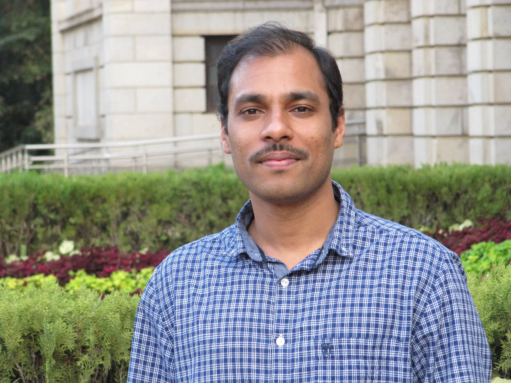

| Home | Research | Publications | CV | Presentations | Contact me | Resources | Demos | |

About me
Welcome !
I received a Ph.D. from Electrical Engineering Dept. of Indian Institute of Science (IISc), Bangalore, under the supervision of Prof. Chandra Shekar Seelamantula.
I received M.Tech. degree from Indian Institute of Technology (IIT), Hyderabad, under the supervision of Prof. K Sri Rama Murty, in 2013.
Biography
- 2014-2021: Ph.D. in Systems Science and Signal Processing from Indian Institute of Science, Bangalore
- 2013: M.Tech. in Electronics and Communication Engineering from Indian Institute of Technology, Hyderabad
- 2010: AMIETE in Electrical and Telecommunication Engineering from The Institution of Electonics and Telecommunication Engineers